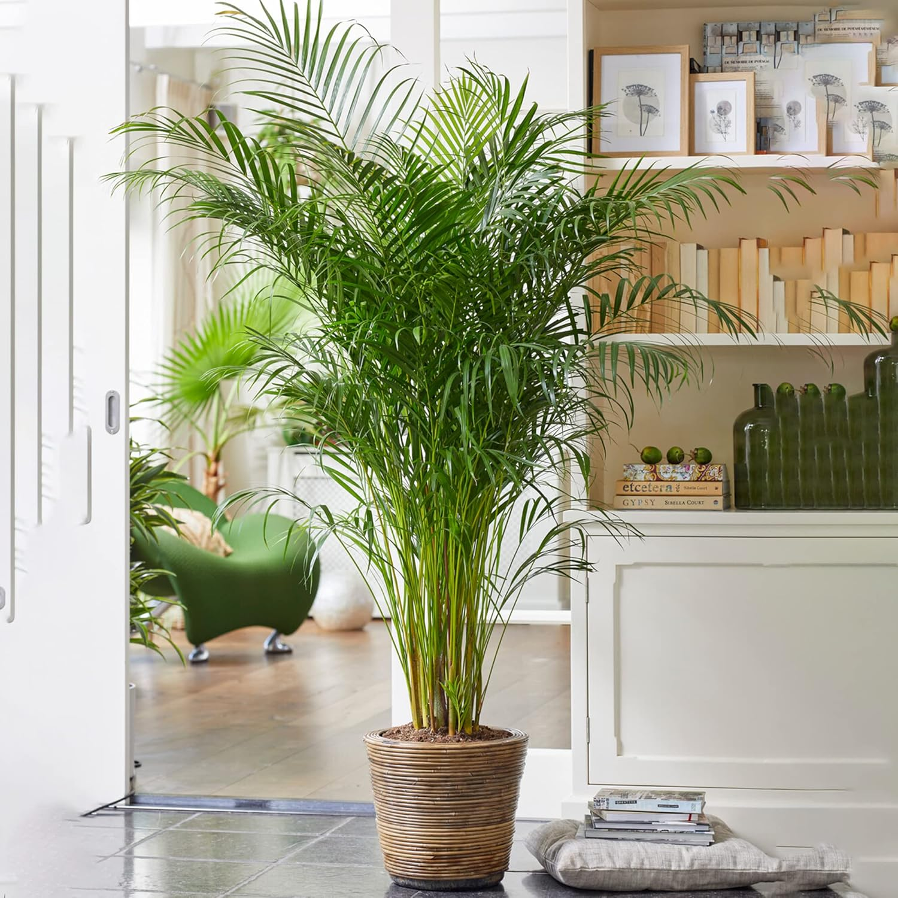

The Areca Palm is a beautiful indoor air-purifying plant known for its feathery fronds and tropical appearance.
Prefers bright, indirect sunlight. Avoid direct harsh sun, which burns leaves.
Water once a week. Keep the soil slightly moist but not soggy.
Best range: 18–24°C. Protect from cold drafts.
Use well-draining soil; repot every 2–3 years for growth.